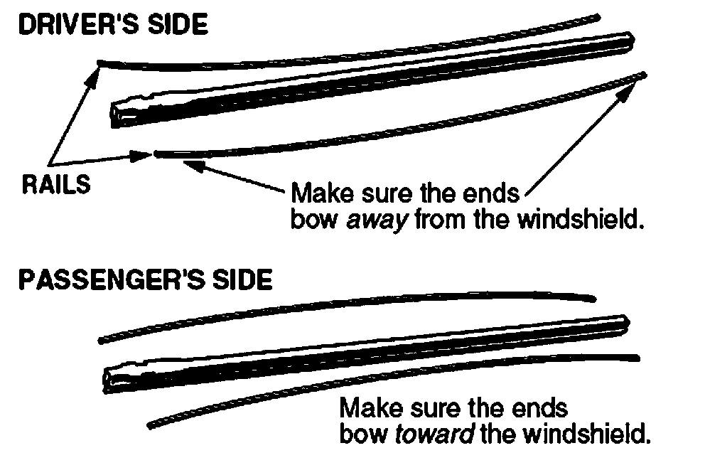
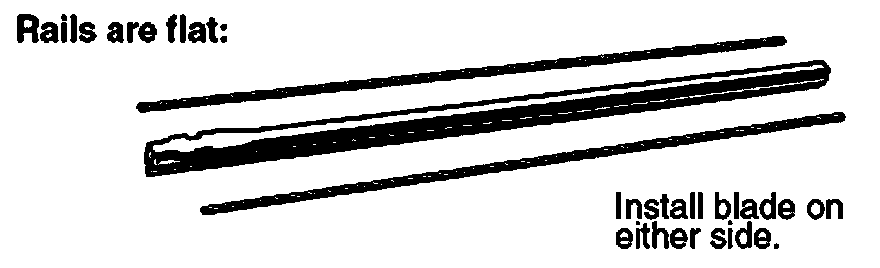

Windshield Wipers - Blade Care and Replacement
SOURCE: Acura Service News
TITLE: Windshield Wiper Blade Care and Replacement
APPLIES TO: All models
SERVICE TIP:
A buildup of road film, oil, or grease on the windshield or the wiper blades can cause the wiper blades to smear, streak, or chatter when being used. If your customers complain of this problem, and their wiper blades are less than 6 months old, try doing this before you replace the blades:
- Use Glass Cleaner or equivalent, to thoroughly clean the windshield. Make sure you clean it well enough so that water slides off of it, not just beads up.
- Use Windshield Washer Concentrate Cleaner & Antifreeze straight from the bottle on a soft cloth to clean the wiper blades. This stuff contains a wetting agent that conditions the blade rubber.
If the wiper blades still smear, streak, or chatter after you've cleaned the windshield and the blades, then blade replacement is in order. When you remove the old blade from its holder, make sure you grab the locking end of the blade on its top and bottom (use your thumb and index finger for this). Tug on the blade until it releases, then slide it off the holder. Don't grab the locking end from the sides. The metal rails could come loose and you could also wind up with a nasty cut.
If the new blades don't have rails, make sure you install the rails from the old blades on the new blades like this:

If the old rails are curved:
- Install them on the new driver's-side wiper blade with the ends bowing away from the windshield. This makes the blade press harder against the middle of the windshield, providing a clear center of vision for the driver.
- Install them on the new passenger's side wiper blade with the ends bowing toward the windshield. This makes the blade press harder against the edges of the windshield to clear off any water at the upper and lower ends of each wiper pass.

If the old rails lie flat:
Install them on either new wiper blade.
If one of the new blades is shorter than the other (this is common on many vehicles), just install the shorter blade on the driver's side.
Slide the new blade into the holder, and push from behind with your thumb until you feel the tabs snap into place. Make sure the blade is locked in place before you reinstall the blade assembly. If it's not, the blade could come off during use and the blade assembly could scratch the windshield.